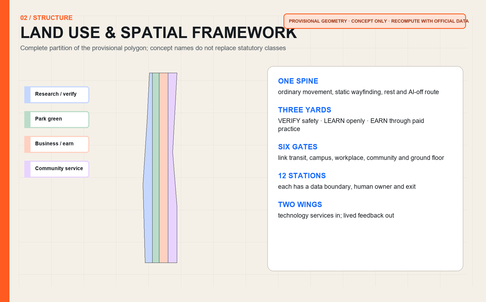
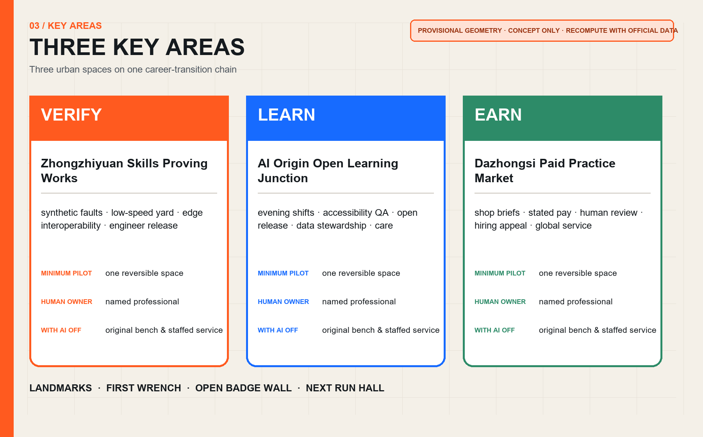
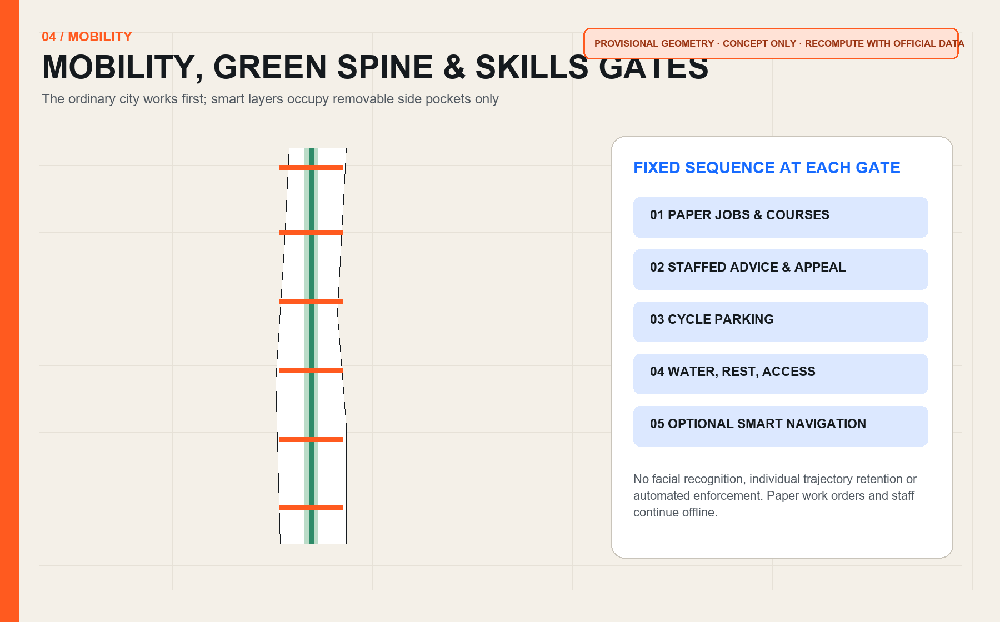
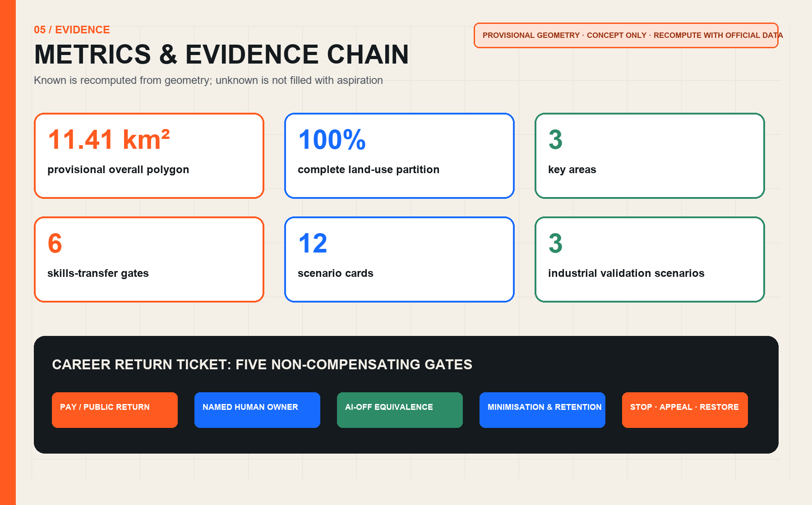

VERIFY
Zhongzhiyuan Skills Proving Works
Prove safety, human takeover and occupational value first.
JING-ZHANG AI INNOVATION BELT · OPEN-SOURCE URBAN DESIGN
AI innovation should first help people already at work keep up.
01 / FRAMEWORK
Prove safety, human takeover and occupational value first.
Learn while employed through evenings, weekends and projects.
Put live briefs, stated pay and human review on one ground floor.

02 / KEY AREAS

03 / SCENARIOS
04 / DELIVERY

05 / EVIDENCE

This page runs fully offline with no remote script, map, font, API, iframe, form or analytics. All geometry is a rough provisional constraint.
06 / SUBMISSION AUDIT